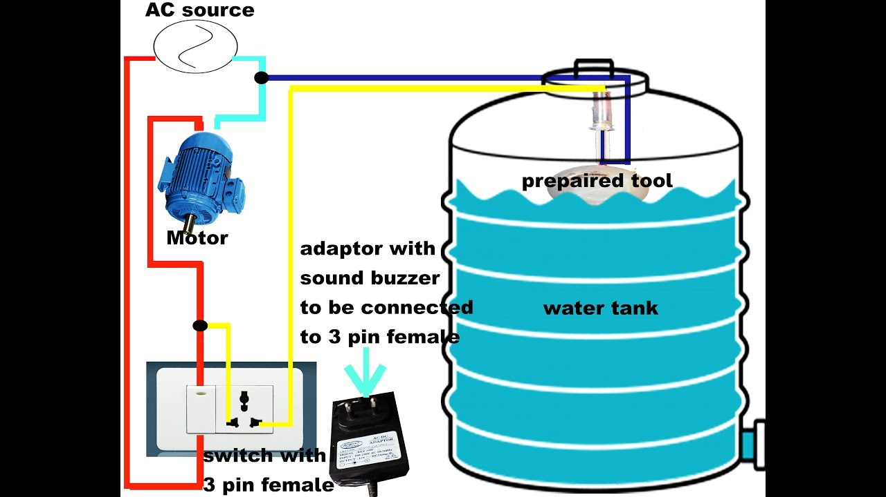

I Done my certification on Cloud computing
I attended Hackthons conducted By ORL Industries And developed a mini Project.
I actively perticipated in Campus events like coding,deburgging and Culture events.
I am the member Of National Service Sceheme. In that me organised Many events like Swachha Bharat,Medical camps.
I completed My graduation Degree At KKR & KSR Institute of Technology and Sciences in the stream of computer sceince and engineering with 8.0 CGPA.
Location:Vinjanampadu,vatticherukuru mandal,guntur District,AP
I Did my intermediate in Narayana junior college In MPC background With 94 percentage.
Location:Reddipalem,Guntur
I Done my schooling in Z.P.High School.
Location:kanaparru
Project Name1April 2020Project About HOUSE LOCK MONITORING using IOT and AI.Face recognition system will identify the person digital image from a camera source. Then it matches the person digital image in the data base. If third person what to enter in home then he/she have to use manual lock. When third person uses manual lock then authorised person should get the message.
|
|
|  |
Project Name2December 2018
Project About SMART WATER TANK.The main aim of this project is to save water from overflowin water tank and gives thenotification to the user to control overflow. |